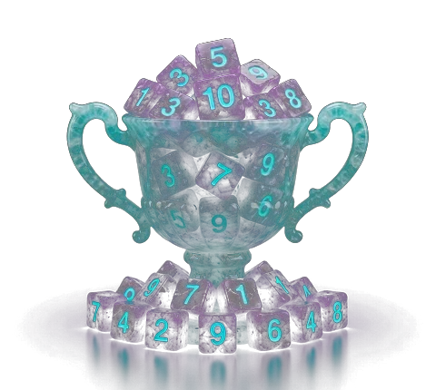

E
QUIL
A math crossword puzzle for humans
▶ RESUME
— · — · — moves
✕
Puzzle Size
Small
~9×9
Medium
~10×10
Large
~15×15
Jumbo
~30×25
Difficulty
Easy
+ and −
Medium
+ − × /
Hard
More blanks
Mode
Chalant
Nonchalant
▶
PLAY
RESUME
📊 Stats
v4.44
←
E
QUIL
HARD · JUMBO
New
⚙
0
moves
0:00
0
✕
Tap a square · then a number · tap placed to return · tap thumb circle to zoom · double-tap to zoom out
↶
UNDO
TIMES
COUNTS
⋮⋮ DEBUG (drag)
◐
✕
▼
CURRENT PUZZLE
▼
PUZZLE AVERAGES
▼
TEMPLATE COUNTS
▼
FAIL REASONS
RESET COUNTS
⋮⋮ TIMES (drag)
◐
✕
SMALL
MEDIUM
LARGE
JUMBO
ANLZ
EASY
MEDIUM
HARD
EXPORT
IMPORT
RESET TIMES
▲
TOOLBAR
💾
📂
👋
📳
PAD
FX
PAD
DSPLY
L·R
EXPR
🌀
✨
🎨
♪
⚙
ABC
GRID
123
1,2,3
SX
SY
XHR
HLD
BTN
⊞#
WAV
⏺
▶
✂
📋
TAP
1
2
3
4
5
6
7
8
🔓
🗑
▲
PADS
KITS
MENU
ADJUSTMENTS
CLASSIC
EDIT
COPY
HLD BTN
COLOR
SAVE
DEL
MULTI-HIT
‹
›
SEQ
▲
SEQUENCE BANK
A
B
C
1
2
3
4
5
1
2
3
4
5
6
7
8
9
10
11
12
13
14
15
DEL
Color
📋
BPM
TAP
CLICK
ON
Scroll
Lock
REC
▲
PITCH · VOL · PAN
PITCH
0
RNG
1
2
3
4
5
7
⊞
VOL
100%
🔓
⊞
PAN
C
⊞
TILE
ADJUST
×N
####
###
ADJUST TILES
▶
ADVANCED
DONE
Sound Style
♪ Classic
♪ 8-Bit
♪ Sci-Fi
♪ Nature
♪ Industrial
🎹 Piano
🎻 Violin
Flute
🎸 Guitar
🎸 Bass
⚗️ Elemental
SMALL · MEDIUM
TEMPLATE:
--
NEW BEST
MOVES
NEW BEST
TIME

🏆
Solved!
CLEAN SOLVE
MOVES
TIME
0 ✕
0
0:00
Best
--
--
Avg
--
--
Least Best
--
--
0:00
0
0
PERSONAL BEST
MENU
NEXT PUZZLE
Cancel
OK
Stats
RESET
CLOSE
Resume?
— · — · — moves
START NEW
▶ RESUME
▶ GO
PAUSED
tap to resume
▶ RESUME